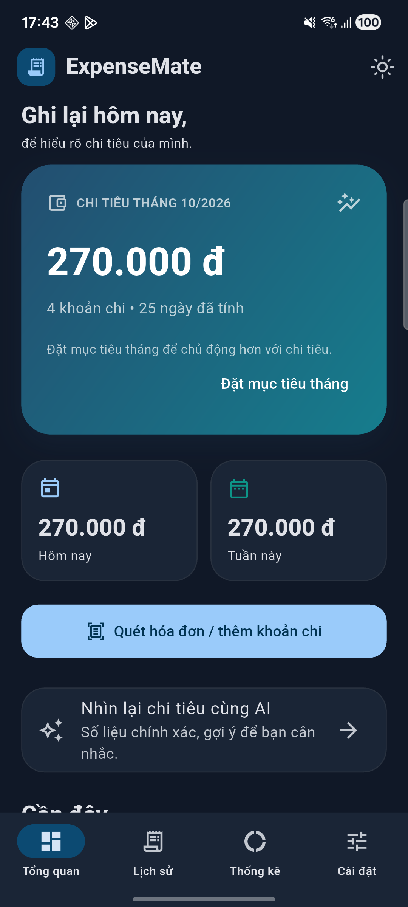
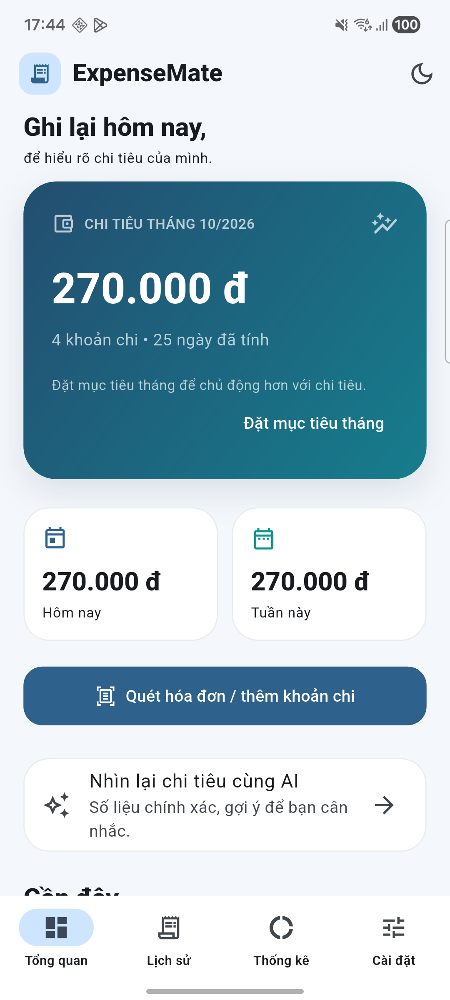

Nhấn vào ô vàng để điền. Ảnh lấy từ thư mục evidence. Chỉ ghi “đạt” sau khi kiểm tra thật; đọc PDF xem trước đủ 4 trang.
VKU / MINI-PROJECT 3EXPENSEMATE 1.0.0
Quản lý chi tiêu từ hóa đơn
Receipt OCR & Expense Tracker · Flutter, ML Kit và Gemini tùy chọn.
Họ tên: [Điền họ tên] MSSV / Lớp: [Điền MSSV và lớp] GitHub: [Điền URL thật]
1. Bài toán và phạm vi
Ứng dụng giúp sinh viên và người quản lý câu lạc bộ ghi chi tiêu từ hóa đơn. Người dùng chụp ảnh, kiểm tra thông tin, sửa lỗi nhận diện rồi lưu. Dữ liệu và ảnh lưu trên thiết bị; thống kê theo danh mục và ngày trong tuần.
2. Kiến trúc
Luồng chính: Camera / chọn ảnh → ML Kit OCR → Dart Regex ↓ Review: đối chiếu ảnh, sửa tên/ngày/tổng tiền, chọn danh mục ↓ người dùng xác nhận ExpenseStore (Provider) → SQLite + ảnh trong documents ↓ notifyListeners Danh sách chi tiêu + donut / cột CustomPainter
Nhánh AI tùy chọn: Review → đồng ý gửi text → Node qua USB → Gemini → kiểm tra JSON → gợi ý danh mục → người dùng Áp dụng.
ML Kit sử dụng học máy trên thiết bị. Regex là quy tắc phân tích văn bản, không phải AI. Gemini không tự sửa ngày, số tiền hoặc tự lưu khoản chi.
Thành phần
Trách nhiệm
core / models
Danh mục, định dạng, đối tượng Expense
services / state
OCR, parser, SQLite, AI, ảnh, backup; trạng thái dùng chung
screens / widgets
Giao diện, kiểm tra thông tin và biểu đồ
server / scripts
Giữ API key, gọi Gemini; cập nhật, chạy, build và đóng gói
VKU / MINI-PROJECT 3THIẾT KẾ VÀ XỬ LÝ
OCR, dữ liệu và AI
3. Bộ phân tích OCR / Regex
TextRecognizer trả văn bản từ ảnh. ReceiptParser chuẩn hóa chữ thường/dấu tiếng Việt, lấy tên cửa hàng ở đầu hóa đơn và tìm ngày/tổng tiền. Thông tin chưa chắc chắn được kiểm tra ở ReviewScreen.
Trường / quy tắc
Xử lý
Ngày
Mẫu dd/MM/yyyy hoặc dd-MM-yyyy, kiểm tra ngày tháng hợp lệ sau khi tạo DateTime.
Số tiền
VND nguyên: 65000, 65.000, 65,000, 65 000. Không tự suy đoán ngoại tệ/tiền thập phân.
Tổng cuối
Ưu tiên tong thanh toan, tong cong, grand total, amount due; tiếp theo tong tien, total.
Loại trừ
subtotal/tạm tính, cash/khách đưa, change/tiền thừa, thuế và giảm giá.
Dữ liệu thiếu
Yêu cầu người dùng sửa/nhập bổ sung; không tự gán ngày hôm nay.
4. SQLite và sao lưu
Bảng expenses gồm id, merchant, amount (INTEGER VND), date (ISO-8601), category, note, image_path, raw_text. Ảnh được sao chép về documents của ứng dụng; SQL sử dụng tham số.
Backup JSON giữ khoản chi và ảnh, không giữ bí mật AI. Nhập bổ sung bằng transaction; bảng restored_items đánh dấu origin/ID để không nhập lặp cùng mục. Bản release ký riêng cài song song debug, chuyển dữ liệu bằng backup.
5. CustomPainter
Donut dùng drawArc với góc theo tỷ lệ danh mục. Cột tuần dùng drawRRect theo tổng từng ngày. AnimationController tạo hoạt ảnh; shouldRepaint xét dữ liệu/theme/progress. Tuần rỗng được xử lý để tránh chia cho 0.
6. Gemini và quyền quyết định
API key chỉ nằm ở tiến trình Node trên laptop. Điện thoại dùng mã ghép nối qua adb reverse. Trước mỗi yêu cầu, người dùng xem nội dung text sắp gửi và đồng ý; server yêu cầu JSON schema, giới hạn dung lượng/tần suất và timeout. Chỉ sáu danh mục hợp lệ được chấp nhận. Lỗi dịch vụ không ngăn nhập và lưu thủ công.
VKU / MINI-PROJECT 3GIAO DIỆN THẬT
Giao diện và nghiệm thu

Chưa có light.png. Chạy Capture-Evidence.cmd.
'">
Giao diện sáng, dữ liệu thật.

Chưa có dark.png. Chạy Capture-Evidence.cmd.
'">
Giao diện tối, cùng dữ liệu.
7. Kết quả kiểm tra
Mặc định ghi đúng trạng thái khi chuẩn bị ZIP. Cập nhật các ô dưới đây bằng kết quả chạy 1.0 thực tế trước khi in/nộp.
Nội dung
Kết quả
Nền tảng 0.1
Người dùng đã chạy trên Samsung SM-A736B; analyzer sạch, 8 test đạt; xác nhận chức năng cơ bản đầy đủ.
Node 1.0
9 test API giả lập đã chạy đạt. Chưa chứng minh Gemini thật.
Flutter 1.0
Chờ analyze/test trên máy chủ dự án.
AI và backup 1.0
Chờ Gemini thật và xuất/nhập dữ liệu.
Release trên Android
Chờ build/cài/kiểm tra APK ký riêng.
VKU / MINI-PROJECT 3MINH CHỨNG VÀ BÀN GIAO
Hạn chế và sản phẩm nộp
OCR / review thật.
Biểu đồ thật.
Gợi ý Gemini thật.
8. Hạn chế
OCR phụ thuộc chất lượng ảnh; hóa đơn nhiều cột, mờ hoặc sai ký tự cần sửa tay.
Parser hiện dành cho VND nguyên, ngày theo định dạng Việt Nam.
AI demo phụ thuộc laptop/USB và mạng. Muốn dùng độc lập cần dịch vụ HTTPS đã triển khai.
Che thông tin theo quy tắc không bảo đảm ẩn hết dữ liệu cá nhân; cần xem trước khi gửi.
Backup tối đa 64 MB, không mã hóa; chưa có đồng bộ tài khoản.
9. Bàn giao
APK release ký riêng, video 2–3 phút có camera thật/review/biểu đồ, GitHub public có README và báo cáo 2–4 trang. Không công khai khóa ký, key.properties, API key hoặc mã ghép nối.
APK: [Điền link tải đã kiểm tra] Video: [Điền link video thật]